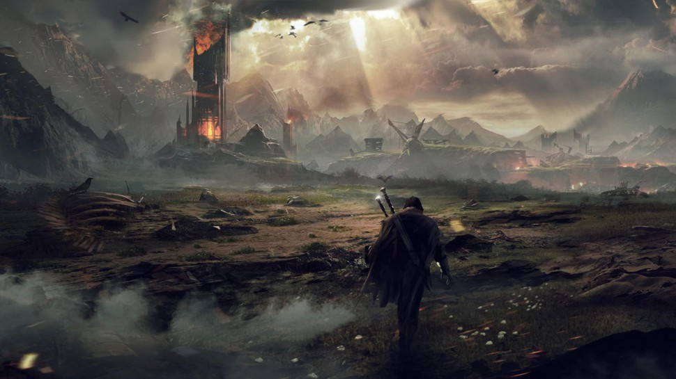

Mordor

During most of the Second and Third Ages Mordor was ruled by Sauron and it was his dwelling and base from which he attempted to conquer Middle-earth.
Mordor was surrounded by three enormous mountain ridges from the North, from the West and from the South, protecting it from an unexpected invasion by any of the Free peoples.
For but a few times in history, the free peoples had anything to do with Mordor; the Last Alliance broke into the land to fight Sauron, and millennia later Frodo Baggins and Samwise Gamgee infiltrated that land to destroy the One Ring.
During the War of the Ring, Sauron gathered all his forces to Mordor.
After the Battle of the Pelennor Fields, a Host of the West went to the Black Gate.
Sauron sent his army to destroy the Men of Gondor and Rohan, but then Frodo Baggins destroyed the One Ring and Mordor fell.
The Dark Tower, the Black Gate and the Towers of Teeth collapsed to ruin.
Mount Doom exploded.
Both Sauron and his Ringwraiths were apparently destroyed.
After the ultimate defeat of Sauron, Mordor became mostly empty again as the Orcs inside it fled or were killed.
Crippled by thousands of years of abuse and neglect, but capable of sustaining life, the land of Mordor was given to the defeated foes of Gondor as a consolation, as well as to the freed slaves of Nurn who were formerly forced to farm there to feed the armies of Mordor.